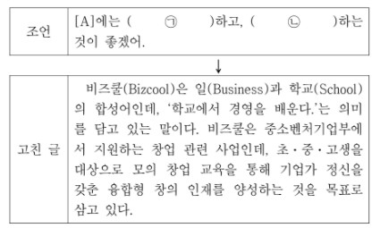

지문 보기(문제8~문제10)

10. 다음은 학생이 '조언'에 따라 [A]를 고쳐 쓰는 과정의 일부이다. ㉠, ㉡에 해당하는 내용을 바르게 짝지은 것은?
1. ㉠ : 개념에 대한 설명이 부족하니 부연 설명을 추가
㉡ : 의미가 중복되는 표현이 있으므로 이를 삭제
2. ㉠ : 필요한 조사가 생략되어 어색하므로 그것을 추가
㉡ : 어법에 어긋난 단어가 있으므로 이를 바르게 수정
3. ㉠ : 문단이 완결되지 않았으므로 마무리 문장을 추가
㉡ : 글의 흐름에서 벗어나는 문장이 있으므로 이를 삭제
4. ㉠ : 문장 성분이 생략되어 어색하므로 필요한 성분을 추가
㉡ : 앞의 문단에서 다룬 내용이 중복되었으므로 이를 삭제
5. ㉠ : 글의 맥락에 부적합한 담화 표지가 있으므로 이를 삭제
㉡ : 문장 간의 연결이 긴밀하지 않으므로 연결 표현을 추가